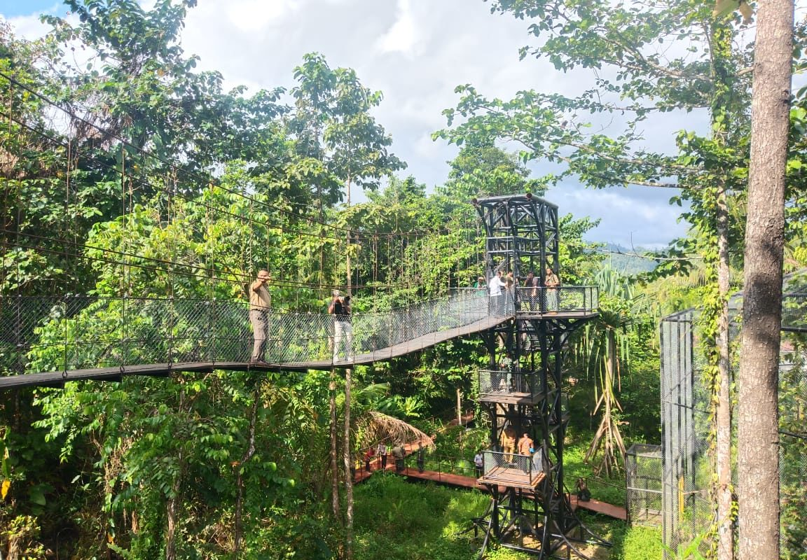
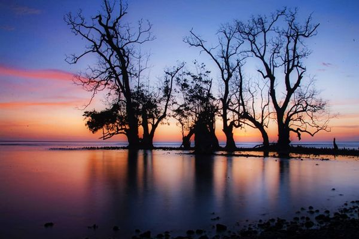
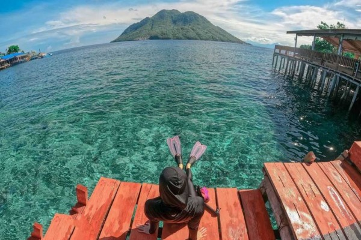
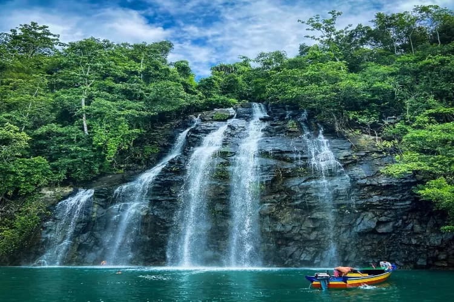
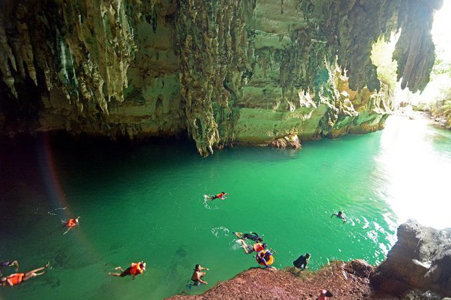
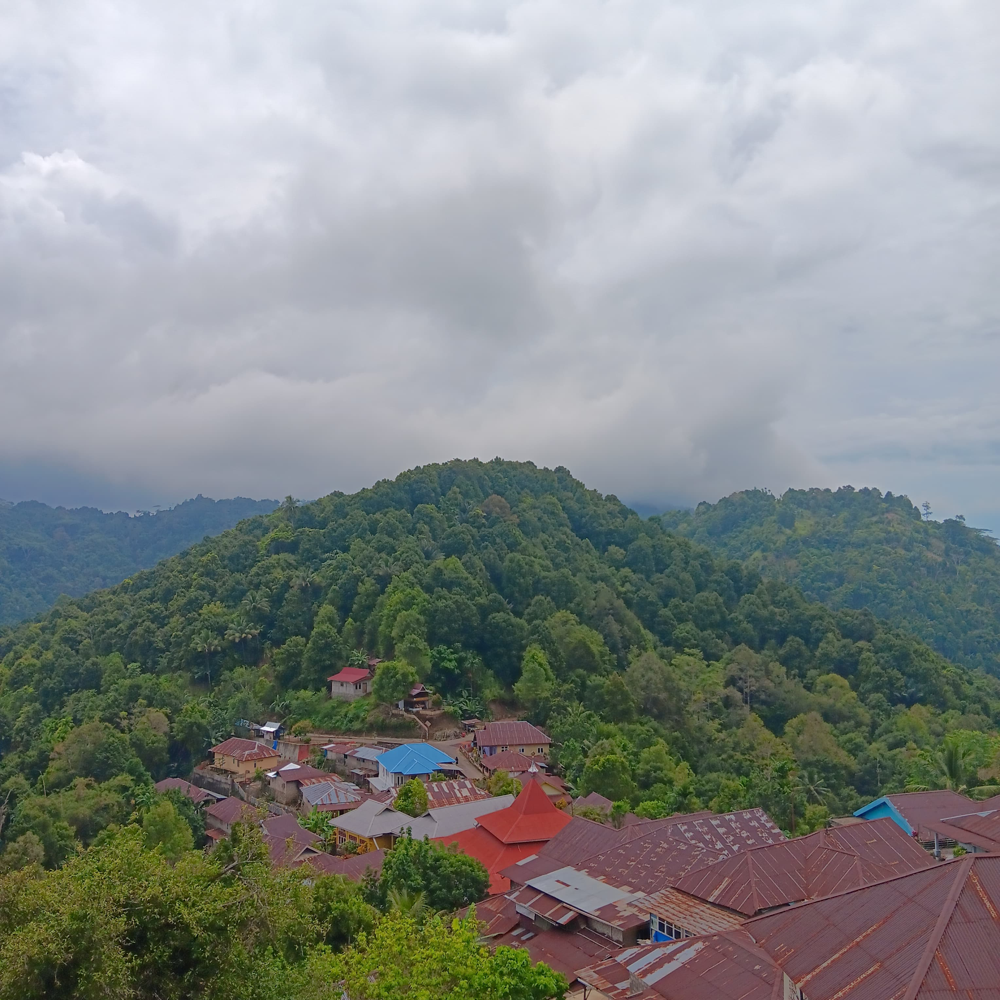
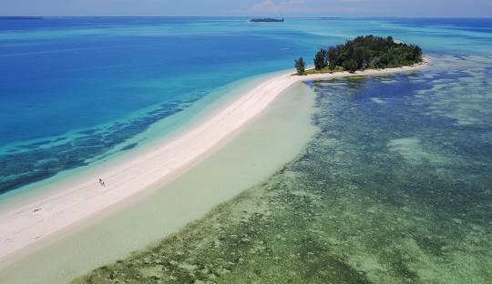

Taman Nasional Aketajawe-Lolobata
Taman Nasional Aketajawe-Lolobata adalah taman nasional yang terletak di Halmahera, Maluku Utara, Indonesia. Taman ini dianggap penting bagi keselamatan 23 spesies burung endemik oleh BirdLife International. Aketajawe-Lolobata, yang merupakan wilayah seluas 167.300 hektare, dinyatakan sebagai taman nasional pada tahun 2004
Wisata Pantai Kastela
Pantai Kastela kini menjadi kawasan wisata yang sedang diburuh wisatawan untuk menghabiskan waktu dikala senja memancarkan warna kemerahannya. Keindahan itu bisa ditemui di Pantai Kastela menjelang malam saat matahari mulai perlahan terbenam.Benar kata wisatawan, kota ini tidak hanya dikenal dengan keindahan alamnya tetapi juga memiliki spot-spot untuk menikmati sunset. Pantai Kastela kini menjadi salah satu rekomendasi wisata terbaik di Kota Ternate.“Jangan dulu mati kalau belum perna melihat sunset di Kastela”, kata Mr Phonie salah satu pengunjung asal Australia di Pantai Kastela saat berbincang-bincang dengan Trimbar's usai memotret matahari saat terbenamMr Phonie mengibaratkan suasana senja Pantai Kastela seperti separuh surga yang secara terduga terlintas dengan keindahannya. Matahari dipantai ini semakin terbenam, panorama sunset makin mempesona
Wisata Pantai Jikomalamo
Pantai Jikomalamo merupakan salah satu destinasi diving dan snorkeling favorit di Ternate. Pantai Jikomalamo memiliki air laut yang bening dan hamparan pasir putih. Pantai Jikomalamo memiliki garis pantai yang pendek, hanya sekitar 100 meter saja. Tetapi, keindahan bawah lautnya yang masih terjaga dan alami menjadi daya tarik dari pantai ini. Terumbu karang dan berbagai jenis ikan karang di pantai ini masih terjaga. Lokasi pantai ini berdekatan dengan Teluk Sulamadaha dan Batu Angus. Pantai Jikomalamo mulai menjadi tujuan destinasi masyarakat lokal maupun wisatawan sejak tahun 2015. Karena mulai ramai sejak menjadi tujuan destinasi wisatawan, akses dan fasilitas ini pun mulai diperbaiki. Pantai Jikomalamo menyuguhkan pemandangan Pulau Hiri dan Gunung Gamalama yang sangat indah.
Wisata Tebing Mari Poroco

Tebing Mariporoco dan Air Terjun Kahatola berada di Kabupaten Halmahera Barat. Keindahan alam di tempat ini tidak diragukan lagi. Tebing Mari Poroco merupakan salah satu fenomena geologi yang terbentuk dari endapan vulkanik berupa lahar, lava, dan abu vulkanis dari letusan gunung ribuan tahun lalu.
Wisata Air Terjun Khatola
Air Terjun Kahatola merupakan air terjun yang belum diketahui banyak orang dikarenakan lokasinya yang cukup jauh dimana memerlukan dua hingga tiga jam melalui jalan air. Namun, sesampainya di sana kamu akan dibuat kagum dengan tebing batu yang tinggi dan terjal mengelilingi pulau. Di salah satu bagian tebing karang yang terjal itulah terdapat Air Terjun Kahatola yang indah. Uniknya, Air Terjun Kahatola bukan berasal dari aliran sungai, namun dari luberan air yang terkumpul di sebuah cekungan. Air tersebut berasal dari rembesan air tanah yang tekumpul dari air hujan, tetesan-tetesan embun yang meresap ke dalam tanah, juga humus. Air terjun ini juga mengucur sepanjang tahun dan tak mengenal musim. Namun, debit air menjadi lebih sedikit saat musim panas. Biasanya hanya mengucur di bagian tengah batu. Berbeda dengan saat musim hujan di mana air mengucur lebih deras.
Wisata Nusara

Pulau wisata nusara sendiri terletak pada ibu kota Kecamatan Bacan, berdekatan dengan Desa Indomut dan Belang-belang. dari ibu kota Kecamatan Labuha,Bacan. Salah satu keistimewaan Pulau Nusa Ra adalah suasananya yang sepi dan tenang. Terpisah dari pulau-pulau berpenduduk, Nusa Ra memberikan nuansa liburan di pulau pribadi. Sepinya pengunjung menjadikan tempat ini sempurna bagi Anda yang mencari ketenangan dan ingin menikmati alam tanpa keramaian.
Wisata Tanjung Bongo

Tanjung Bongo, terletak di Kecamatan Galela, Halmahera Utara, Maluku Utara. Tanjung Bongo ini sering disebut-sebut sebagai miniatur Raja Ampat. Karena memiliki gugusan pulau-pulau karang yang sangat menawan, meski ukurannya sangat kecil dibanding gugusan pulau karang di Raja Ampat. Tanjung Bongo, yang juga sering disebut sebagai Telaga Biru ini memiliki luas sekitar 250 Hektar dan merupakan danau terbesar yang ada di Pulau Halmahera. Asiknya liburan ke sini, bukan hanya pemandangan alam di atas airnya saja yang bisa dinikmati. Bawah air Tanjung Bongo pun bisa dinikmati. Karena terdapat juga beberapa spot diving dan snorkeling untuk melihat langsung surga bawah laut Tanjung Bongo.
Wisata Pulau Widi

terletak di Desa Gane Luar, Kecamatan Gane Timur Selatan, Kabupaten Halmahera Selatan, Provinsi Maluku utara. Kepulauan Widi terdiri dari gugusan pulau kecil yang menjadi destinasi wisata dengan keindahan hamparan pasir putih. Ada dua atol, pulau karang berbentuk lingkaran atau gelang. Tak heran, kepulauan ini kerap dinyatakan sebagai tempat terindah di Provinsi Maluku Utara. Ada pula satwa karismatik seperti lumba-lumba, hiu, pari manta, dugong, hiu paus, paus biru kerdil, dan paus sperma yang mendiami dan berimigrasi melalui perairan sekitar.
Wisata Goa Boki Maruru
lokasi wisata Goa Boki Maruru di Desa Sagea, Kecamatan Weda Utara, Kabupaten Halmahera Tengah Sebagian besar pengunjung mengaku takjub dengan keindahan dan keunikan Goa Boki Maruru kicauan burung berbagai jenis. Keheningan Geopark ini tentu menghipnotis setiap pengunjung. Nuansanya masih alami sekali, hijau dan sejuk pohon-pohonannya. Airnya yang sangat dingin tentu membuat pikiran kita lebih fresh, karena tenang serta dipadu dengan udaranya yang begitu segar, yang paling menarik dari Goa Boki Maruru adalah pemandangan bebatuan di tepi sungai menuju Goa tersebut
Wisata kalaodi
Mendengar Kalaodi sekejap terlintas sebuah kampung berada di atas gunung. Beralamat di Kecamatan Tidore Timur, Kota Tidore Kepulauan, Kalaodi dinamai negeri diatas awan. Kampung indah dan kaya akan rempah ini kini jadi wisata ekologi. Kalaoadi bak miniatur kampung ekologi, sekaligus laboratorium pengetahuan alam.
Wisata Pulau Dodola
Pulau Dodola adalah pulau yang wajib Anda kunjungi saat di Morotai. Pulau ini sangat mempesona hingga Pemerintah daerah setempat menyebutkan Pulau Dodola sebagai mutiara di bibir pasifik. Pulau Dodola merupakan salah satu tempat wisata di Kabupaten Pulau Morotai, Provinsi Maluku Utara.